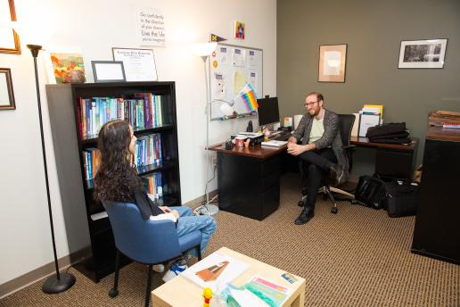
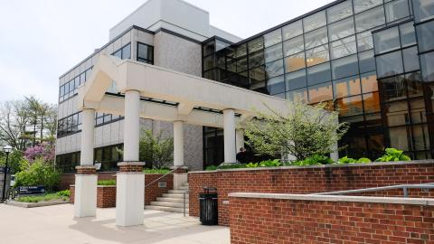

Maintaining your mental well-being is essential for thriving both academically and personally.
Explore these resources to support your mental health and help you manage the challenges of student life.
Counseling and Psychological Services (CAPS)
Counseling and Psychological Services (CAPS) at the University of Michigan is dedicated to support the mental health and well-being of students.
Counseling and Psychological Services (CAPS)
Counseling and Psychological Services Building

Counseling Services Set-Up
CAPS provides a range of resources including individual counseling, peer counseling, and teletherapy, with both in-person and virtual services.
Their services are designed to accommodate student's diverse needs, focusing on creating a safe, inclusive, and supportive environment.
Whether you're dealing with stress, anxiety, or other mental health concerns, CAPS is here to help. For more information, visit the CAPS.
Conflict Resolution
Addressing conflicts and mental health challenges is essential for maintaining a balanced student life.
Both The Office of Student Conflict Resolution (OSCR) and the Ombuds office are valuable resources for students seeking support in resolving conflicts or addressing concerns,
making sure that your mental health and overall well-being are prioritized during your time at the University of Michigan.
Office of Student Conflict Resolution (OSCR)

Office of Student Conflict Resolution Building
The Office of Student Conflict Resolution (OSCR) provides various conflict resolution pathways
to support students in navigating disputes peacefully and productively.
OSCR promotes restorative practices that are student-driven and community-centered,
offering solutions that meet the unique needs of each individual.
Whether you're experiencing personal or academic conflict, visit OSCR for help.
Office of the Ombuds
Office of the Ombuds Building
For students facing more complex disputes with the University,
the Office of the Ombuds offers confidential and impartial support.
The Ombuds office provides a safe space for students to discuss concerns related to University policies, procedures, or actions.
Whether you need assistance evaluating your situation, resolving a conflict, or understanding your options,
visit the Ombuds for help.